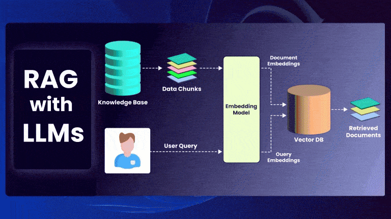

Introduction
Retrieval-Augmented Generation (RAG) is a powerful framework that enhances Large Language Models (LLMs) by incorporating external knowledge retrieval. Instead of relying solely on a model’s parametric memory, RAG retrieves relevant documents and conditions the model’s generation on them.
This post provides a mathematical formulation of RAG and explores the top-k retrieval algorithms used in modern implementations.
Mathematical Formulation of RAG
Given an input query ( q ), RAG retrieves a set of top-k documents ( D = {d_1, d_2, …, d_k} ) and generates an output ( y ) based on both the query and retrieved documents.
Step 1: Document Retrieval
The retriever finds the most relevant documents by computing similarity scores between ( q ) and each document ( d_i ):
\[ S(q, d_i) = \frac{\mathbf{q} \cdot \mathbf{d}_i}{\|\mathbf{q}\| \|\mathbf{d}_i\|} \]
where: - ( ) and ( _i ) are vector embeddings of the query and documents. - ( S(q, d_i) ) is the similarity score (cosine similarity, dot product, or Euclidean distance). - The top-k documents are selected based on the highest similarity scores.
The probability of selecting a document ( d_i ) is:
\[ P(d_i | q) = \frac{\exp(S(q, d_i))}{\sum_{j} \exp(S(q, d_j))} \]
Step 2: Generation Model
The retrieved documents ( D ) are concatenated with the query and passed to the LLM:
\[ P(y | q, D) = \prod_{t=1}^{T} P(y_t | y_{<t}, q, D; \theta) \]
where: - ( y_t ) is the ( t )-th token of the output. - ( ) are the LLM’s parameters.
The final probability of generating ( y ) is:
\[ P(y | q) = \sum_{d \in D} P(y | q, d) P(d | q) \]
This formulation marginalizes over retrieved documents, integrating retrieval and generation.
Top-k Retrieval Algorithms
Finding the most relevant top-k documents efficiently is crucial for real-time RAG applications. Several Approximate Nearest Neighbor (ANN) search algorithms are used:
2. Inverted File Index (IVF) + Product Quantization (PQ)
- Uses k-means clustering to group similar vectors.
- Searches only in the nearest cluster, reducing computational cost.
- Time complexity: ( O() ).
- Used in FAISS.
3. Locality-Sensitive Hashing (LSH)
- Uses random projections to hash similar vectors into the same bucket.
- Very fast but can suffer from reduced accuracy.
- Time complexity: ( O(1) ).
- Used in Spotify Annoy, ScaNN.
Choosing the Right Algorithm
| Algorithm | Best For | Scalability | Accuracy | Query Time |
|---|---|---|---|---|
| Brute Force | Small datasets | Poor | High | Slow ( O(N) ) |
| HNSW | Large, dynamic data | Excellent | High | Fast ( O(N) ) |
| IVF + PQ | Compressed storage | Good | Medium | Moderate ( O() ) |
| LSH | Fast lookups | Good | Low-Medium | Very fast ( O(1) ) |
For real-time RAG, HNSW is preferred for its speed and accuracy, while IVF+PQ is useful for large-scale, compressed storage retrieval.
Conclusion
Retrieval-Augmented Generation (RAG) blends retrieval-based search with LLM-based generation, enabling models to access external knowledge dynamically. Efficient retrieval via ANN search algorithms like HNSW and IVF+PQ is essential for scaling RAG-based systems.
By understanding these underlying principles, we can optimize memory efficiency, retrieval accuracy, and inference speed in RAG pipelines. 🚀
References
- Facebook AI. “FAISS: A Library for Efficient Similarity Search.”
- Google Research. “ScaNN: Efficient Vector Search at Scale.”
- Malkov et al. (2018). “Efficient and robust approximate nearest neighbor search using Hierarchical Navigable Small World graphs.”